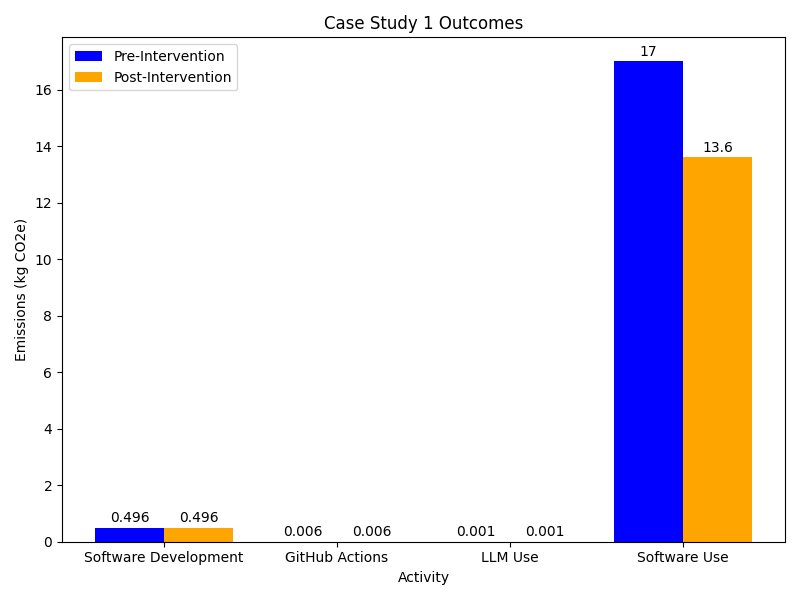

Case Study 1 - Research Software Engineer
Last updated on 2026-05-14 | Edit this page
Overview
Questions
- What are the main sources of carbon emissions in research software development and deployment?
- How can a Research Software Engineer measure and estimate emissions from software development, CI/CD workflows, LLM usage, and software execution?
- What strategies can reduce carbon emissions from widely-used research software?
- How do emissions from software usage compare to emissions from software development?
Objectives
- Collect and organize data needed to estimate carbon emissions across the software development lifecycle, including development, testing, and user execution.
- Calculate carbon emissions from different activities using appropriate tools.
- Analyze emissions data to identify the most significant sources and prioritize reduction efforts.
- Design and implement emission reduction strategies including code optimization, improved user documentation, and better error handling.
Scenario
Celia is a Research Software Engineer that works as part of a research group. Two years ago, she developed and released a Python package (hosted on PyPI) with a novel data analysis technique relevant to her research area. The package has been a big success and has been widely adopted. However, she has heard from some users that they are using it on increasingly large datasets that leads to demanding memory requirements and slow performance.
Celia is concerned about the environmental impact of her software package. She wants to assess the carbon emissions associated with both the development and usage of her package and identify ways to reduce these emissions.
Celia should assess the balance of emissions involved in development of the code base versus its usage. She should look at how to estimate these then focus her emission reduction measures appropriately.
Collecting Information
What data does Celia need to understand the emissions associated with her software?
- What are the key aspects of her work that Celia could estimate emissions for?
- What methodologies could Celia use to estimate her emissions?
- What additional data would she need to collect in each case?
- Use of laptop for development: Embodied emissions of the laptop should be readily findable in a PCF sheet. As her laptop underpins all of her work however it wouldn’t be appropriate to ascribe the full embodied emissions to her package. She could ascribe a proportion of the embodied emissions to development of the package. Regarding the operational emissions she could attempt direct measurement of her laptop with a power meter but given the proportionally low operational emissions of consumer electronic devices a rough calculation using the Green Algorithms Calculator would likely be sufficient.
- Use of LLMs: Tracking which model she uses, and how many queries she sends and the approximate size of the replies for use with the Hugging Face Ecologits calculator.
- Execution of the package: Celia’s software is used by many different users on a variety of systems. It’s unlikely to be practical to get direct energy measurements in this case. More practically she could make use of the Green Algorithms Calculator. She should try and get as much detail as possible from users about how much they use the software and with what hardware. She’s unlikely to be able to get information from all users but if she can get a representative sample then she could extrapolate to get a rough estimate. Estimating the embodied emissions for all of the machines the code is running on would be a potentially large job so she might want to put that out of scope.
- Use of GitHub actions: Information about how often her workflows run and how long they take to execute. She could also consider adding ECO CI to get emissions estimates created for her.
Software Development
Celia decides to learn more about each of the emission sources, starting with inspecting the hardware she uses for package development. She primarily works on her laptop, on an average, using it for 20 hours per week for the software development intermixed with other tasks. She observes that the development process is not particularly computationally intensive as she mostly works with an Integrated Development Environment and runs the test suite occasionally. Her laptop is an HP EliteBook 840 G9.
GitHub Actions
To ensure that her software package follows best practices, she has been using GitHub Actions for continuous integration and testing. Workflows run on any push to a branch, when a pull request is opened and when a release is created. Looking over the last week, all of her workflows together have a runtime of around 2940 seconds. She adds ECO CI to her workflow and runs notes its output over a few trial runs. The average of her trial runs is around 1 gCO₂e for a workflow that runs for 500 seconds. This includes the operational and embedded estimates.
LLM Use
For creating inline documentation for her code, Celia has been using AI coding agents. While she is not using them frequently, she notices that on an average, she writes approximately 20 prompts to the agents every week. She takes note of the agent she uses, GPT-5 mini, and that it typically provides short responses.
Software Usage
Finally, Celia reaches out to her research group members who are users of her package. They are able to provide her with the full specification of the machine they are using - an HP Z2 Tower G1i Workstation. They run the package for around 18 hours a week using all 20 cores.
From individuals she’s in contact with, conversations she’s had at conferences, mentions in academic papers and a workshop she ran recently, Celia estimates that her code has around 30 regular users outside of her own research group.
Analysis
Estimating emissions
With the information provided in the previous section what estimates can you create for Celia’s emissions from different activities?
- Software Development: From the model of her laptop she is able to find the PCF datasheet from the manufacturer - HP EliteBook 840 G9 PCF Sheet. This gives a total of 176 kgCO₂e. Assuming a 5 year lifespan of the laptop and a total weekly usage of 40 hours she calculates the weekly proportion of embodied emissions to be 338 gCO₂e. She uses the Green Algorithms Calculator to estimate the operational emissions. The Green Algorithms calculator doesn’t have data for her exact CPU model so she looks up the Thermal Design Power of the processor and provides it. To get the CPU utilisation she decides to err on the side of caution and assume her development activities use a full CPU core for the full 20 hours she spends developing. This provides an estimate of 58 gCO₂e per week.
- Software Usage: Celia has enough details to estimate her groups activities using the Green Algorithms calculator. Doing for this the known runtime and hardware of her research group this provides an estimate of 569.61 gCO₂e per week. To estimate the impact of other users of her software she could consider using number as a reference although it might make for a pretty rough estimate. This would give an estimate of around 17 kgCO₂e per week of operational emissions. Celia decides to leave out the embodied component of the analysis as she doesn’t know enough about what hardware is being used to run her code.
- GitHub Actions: Given she has an estimate for a workflow of 500 seconds she chooses to simply scale this up to the full runtime of 1640 seconds. This gives an estimate of around 6 gCO₂e per week.
- LLM use: Using the HuggingFace EcoLogits calculator Celia estimates her weekly usage at around 1 gCO₂e.
Taking Action
From the estimates Celia has made it’s clear that the emissions associated with usage of her package are the most significant. She also anticipates these growing over time given the growing popularity of her package. The emissions from GitHub actions and LLM usage are negligible.
Measures to reduce emissions
What measures can Celia take to reduce the emissions from the usage of her software?
To reduce the emissions associated with the development and usage of her software package, Celia can take the following measures:
- She could consider profiling and optimising her code base.
- Making note the repetitive questions her package users might have and creating a detailed user guide that includes instructions on how to make the most efficient use of her package.
There are many steps Celia could take to reduce emissions. Keep a record of the ideas you’ve had and compare them with those in the next section.
Celia identifies several ways she can improve the emissions associated with usage of her code base.
Code Optimisation
Celia uses a profiler with her code to identify areas where the code
could be optimised. She identifies the areas of the code where the bulk
of the computation is performed. After some experimentation she finds a
way to improve use of SIMD in a key calculation. Furthermore, she
replaces the use of the pandas library with
polars and reverses the order of a conditional statement
and a loop deep within the code, so that the former is not checked
several times unnecessarily. In her tests this gives a 7% performance
boost to the code.
Her code also runs in parallel across multiple cores. Her profiling helps her to identify that work is not being evenly distributed between cores leaving some cores idle whilst they wait for others to finish. She implements a new algorithm to partition work between the cores and with an overall 10% improvement in runtimes.
Combined these steps reduce the computational resource usage of her code by 15%.
User Support
The users of her package (members of her research group) have been asking her for help with optimising the performance of the code. She provides them with some tips on how to optimise the performance of the code when they run it on their local machines. Additionally, she creates a detailed user guide that includes instructions on how to make the most efficient use of her package, including tips on how to optimise the performance of the code when running it on different hardware configurations.
Whilst it’s difficult to estimate the overall impact of this work, with her help the members of her research group that Celia works with were able to improve throughput when using her package by 6%.
Reducing Wasted Runs
Celia takes a pass at improving the error handling and input validation in her code to reduce the likelihood of running into errors that lead to repeated runs of the code. She implements a new configuration validation approach. She ways to catch some failure modes early before significant computation has occurred.
Again it’s difficult to estimate the impact of this work but when these changes were released Celia is contacted by several users confused by the new errors. This suggests the changes are catching at least some errors.
Hardware Usage
She decides to keep using the laptop for as long as its lifespan, instead of replacing it too soon.
Other
Celia also integrates the codecarbon as an optional dependency in her code base so that it can report the carbon emissions when the code is run. This allows her more easily to track the emissions associated with the usage of her package.
Outcomes

Reviewing the changes she’s implemented Celia estimates a reduction of around 20% in the emissions from usage of her package. That’s a weekly saving of around 3.5 kgCO₂e per week or an annual saving of around 175 kgCO₂e.
- Research software development can have significant environmental impacts.
- Measuring and estimating carbon emissions from research software development is important for identifying areas for improvement.